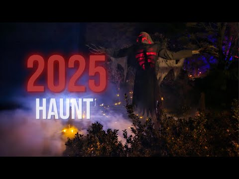

Wyatt Haunt 2025 - Forest of Fears
A one-night haunted walk in the dark woods of Spofford, NH, built by local family and friends with scare actors, animatronics, fog, strobes, lasers, and a full outdoor atmosphere.
Loading Stuff

A one-night haunted walk in the dark woods of Spofford, NH, built by local family and friends with scare actors, animatronics, fog, strobes, lasers, and a full outdoor atmosphere.
Forest of Fears is the 2025 Wyatt Haunt experience: a dark-woods walkthrough where local family and friends come together each year to craft a one-of-a-kind haunted attraction in Spofford, New Hampshire. This season steps up the scale with tighter scene pacing, stronger practical effects, and a heavier atmosphere from entry to finale. Guests move through eerie forest paths filled with scare actors in full costumes, intense animatronics and effects, artificial fog, jump scares, strobe lighting, and lasers. The event is free and open to the public, with donations encouraged but never required.